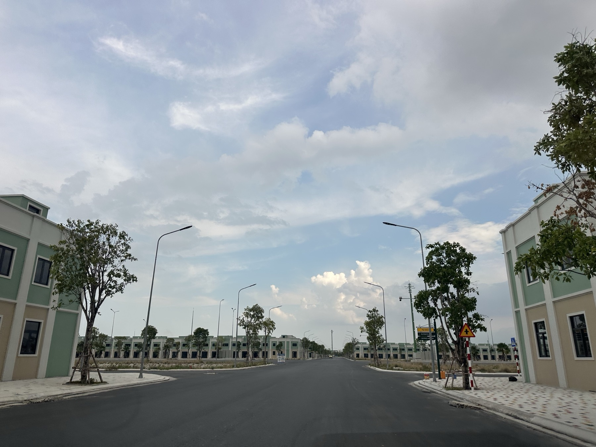

Điểm tin BĐS Khánh Hòa tuần 21–27/9: sáu tin đáng để ý
Tỉnh công bố gỡ vướng hơn 130 dự án tồn đọng, khu đô thị Vĩnh Lương 49.000 tỷ chưa có nhà đầu tư, nhà ở xã hội khởi công thêm 833 căn nhưng HĐND chê giá còn cao, lãi vay thả nổi lên 15–16%, tiền ngoại rút ngay tuần nâng hạng, và du lịch về đích kế hoạch trong khi phòng vẫn trống một phần ba. Sáu tin của tuần, mỗi tin kèm một câu: nghĩa là gì với người cầm tiền hoặc cầm đất.

Ảnh tư liệu khảo sát thực địa. Bài đăng bù cho tuần 21–27/9 mà tôi lỡ nhịp. Nội dung giữ đúng những gì tôi đã gửi khách trong tuần đó.
Mỗi sáng tôi đọc tin thị trường rồi gửi bản tóm tắt cho khách qua Zalo. Cuối tuần tôi gom lại những tin đáng để ý nhất, kèm một câu: điều này nghĩa là gì với người đang cầm tiền hoặc cầm đất. Tuần 21–27/9 tôi lỡ nhịp đăng, nên bài này được viết bù sau.
1. ⭐ Hơn 130 dự án tồn đọng được hẹn gỡ xong trước cuối năm
Ngày 23/9 tỉnh công bố danh sách gỡ vướng hơn 130 dự án, hạn xong trước cuối 2026, chia ba nhóm: 15 dự án đất ở đã bán cho người mua nhưng chưa thành khu dân cư, 94 dự án chọn chủ đầu tư không qua đấu giá hay đấu thầu, 24 dự án chưa có quyết định giao đất. Nguyên tắc: chỉ gỡ khi lỗi có phần của cơ quan nhà nước. Cùng tuần, vụ đất sân bay Nha Trang cũ (hơn 62 ha đất quốc phòng, 3 dự án BT) được Trung ương kết thúc theo dõi từ 17/9. Tỉnh yêu cầu nộp phương án gỡ trước 25/9, áp dụng Nghị quyết 29/2026/QH16 về xử lý vi phạm đất đai xảy ra trước Luật Đất đai 2024.
Nghĩa là gì: ai đang cầm hợp đồng ở một dự án treo thì việc đầu tiên là hỏi cho rõ dự án mình thuộc nhóm nào, và lỗi nằm ở phía nào. Được nằm trong danh sách chưa có nghĩa là được gỡ. Đừng bán tháo theo tin đồn, cũng đừng mua gom theo tin đồn (nguồn: Báo Khánh Hòa 23–24/9).
2. ⭐ Vĩnh Lương 49.000 tỷ mới bắt đầu tìm nhà đầu tư, và một thửa đất có hai bản quy hoạch nói khác nhau
Khu đô thị hỗn hợp Vĩnh Lương (phường Bắc Nha Trang) rộng gần 255 ha, vốn hơn 49.000 tỷ đồng, dự kiến khoảng 6.095 căn thương mại và 710 căn nhà ở xã hội. Dự án mới bước sang giai đoạn tìm nhà đầu tư, chưa chọn được ai. Ở Ninh Hòa, có thửa đất đã cấp sổ, quy hoạch chung ghi đất ở, nhưng quy hoạch phân khu lại ghi đất rừng sản xuất.
Nghĩa là gì: ai chào "đất dự án Vĩnh Lương" lúc này thì anh/chị dừng lại, vì dự án còn chưa có chủ. Mua đất ở bất cứ đâu thì đối chiếu cả quy hoạch chung lẫn quy hoạch phân khu trước khi đặt cọc. Các bước tôi ghi trong bài kiểm tra quy hoạch trước khi xuống tiền (nguồn: bản tin tổng hợp 21/9; Báo Khánh Hòa 25/9).
3. Nhà ở xã hội: khởi công thêm 833 căn, nhưng HĐND nói giá còn cao
Sáng 20/9 khởi công dự án nhà ở xã hội CT-04 tại khu đô thị An Bình Tân, phường Nam Nha Trang: 833 căn 57–77 m², 15 tầng, vốn khoảng 1.600 tỷ, chưa công bố giá bán. Ngày 24/9, HĐND tỉnh giám sát: toàn tỉnh 19 dự án, 23.056 căn, mới hoàn thành 4 dự án (1.655 căn). HĐND nhận xét giá còn cao so với thu nhập người lao động. Dự án CT-01 (772 căn) dự kiến xong quý 4/2027 và chưa ký hợp đồng mua bán nào.
Nghĩa là gì: cung thật đang tăng, nhưng từ khởi công đến nhận nhà tính bằng năm. Người đủ điều kiện nên theo dõi đúng dự án, đúng mốc, đừng nghe "sắp mở bán" mà vội đặt tiền giữ chỗ. Tổng quan giá và điều kiện tôi viết ở bài nhà ở xã hội Khánh Hòa 2026 (nguồn: bản tin tổng hợp 21/9; Báo Khánh Hòa 24/9).
4. ⭐ Lãi vay thả nổi lên 15–16%, và tiền gửi chạy đua quanh 9%
Lãi vay thả nổi ở nhiều ngân hàng đã lên 15–16%/năm. Hấp thụ căn hộ sơ cấp 6 tháng đầu 2026 giảm 62% so với nửa cuối 2025, còn đòn bẩy nợ của doanh nghiệp bất động sản chạm đỉnh 15 quý. Phía tiền gửi, gần 10 ngân hàng trả từ 9%/năm (NCB 9,35%, Vikki 9,2%, SHB 9,1%), cao hơn hẳn mức niêm yết cao nhất 7,9%. Tiền gửi dân cư lập kỷ lục hơn 11,2 triệu tỷ đồng cuối tháng 7.
Nghĩa là gì: tính đòn bẩy bằng lãi sau ưu đãi, đừng tính bằng lãi năm đầu. Chủ đầu tư nợ cao thì tiến độ và chiết khấu dễ đổi giữa đường. Một lưu ý: có nền tảng chào lãi tới 14%/năm, nhưng đó là hợp đồng vay hay đầu tư, không phải tiền gửi ngân hàng. Kiểm tra trên app và hợp đồng chính thức của ngân hàng. Bảng tính mẫu ở bài lãi tiết kiệm lên 9%, lãi vay quanh 11% (nguồn: bản tin tổng hợp 21–25/9).
5. Tuần nâng hạng FTSE: tiền ngoại không vào, mà rút
Từ 21/9 Việt Nam chính thức vào rổ FTSE Emerging, tỷ trọng chia 4 đợt (khoảng 10%, 30%, 65% rồi 100%) kéo dài đến 9/2027. Nhưng cả tuần 21–25/9 khối ngoại bán ròng khoảng 2.900 tỷ, VN-Index giảm 30,55 điểm (−1,68%) về 1.785. Nhóm bất động sản tăng 1,53% nhưng chủ yếu nhờ VIC, VHM, VRE. Phần lớn mã bất động sản khác vẫn giảm.
Nghĩa là gì: tin lớn chưa chắc kéo theo tiền lớn ngay. Tiền ngoại đến theo từng đợt, không đến một lần, và một nhóm cổ phiếu tăng không có nghĩa cả ngành đang ấm lại. Bài học này đúng y với bất động sản: đọc dòng tiền thật, đừng đọc tiêu đề (nguồn: Vietstock, bản tin tổng hợp 21–27/9).
6. Du lịch về đích kế hoạch năm, nhưng phòng vẫn trống một phần ba
Chín tháng, du lịch Khánh Hòa thu gần 68.000 tỷ, đạt 100% kế hoạch năm, khách tăng 45,66%. Nhưng công suất phòng bình quân chỉ khoảng 65%. Tỉnh muốn kéo khách rải đều quanh năm: Festival Biển 2027 sẽ kéo dài cả 4 mùa, mỗi quý một chủ đề. Cũng trong tuần, khu nghỉ dưỡng 100 biệt thự ở Vĩnh Hy (vốn hơn 1.600 tỷ) được khởi công.
Nghĩa là gì: khách đông chưa có nghĩa là phòng của mình kín. Tính dòng tiền khách sạn hay căn hộ dịch vụ thì dùng công suất bình quân cả năm, đừng dùng tuần lễ hội. Bốn câu tự kiểm trước khi mua khách sạn tôi viết trong bài du lịch về đích sớm mà khách sạn vẫn trống (nguồn: Báo Khánh Hòa 25–27/9).
Điều tôi để ý nhất tuần này
Tuần này có rất nhiều con số lớn: 130 dự án, 49.000 tỷ, nâng hạng thị trường, 68.000 tỷ doanh thu du lịch. Nhưng đằng sau mỗi con số là một câu hỏi nhỏ hơn mà quan trọng hơn: dự án của tôi nằm ở nhóm nào, dự án này đã có chủ chưa, tiền ngoại đã vào chưa, phòng của tôi kín được bao nhiêu đêm. Tin lớn để biết, câu hỏi nhỏ mới để quyết.
Bản tin tổng hợp từ các nguồn báo chí trong tuần 21–27/9/2026 mà tôi đọc và gửi khách hằng ngày, đăng bù ngày 4/10/2026. Đây là tin tổng hợp, không phải văn bản gốc. Trước khi dùng bất kỳ con số nào để ra quyết định, anh/chị nên kiểm chứng lại tại nguồn chính thức.
"Rồi, ngày mới tốt lành nhé."
Muốn nhận bản tin này mỗi sáng 7h?
Tôi đọc tin thị trường mỗi sáng rồi gửi bản tóm tắt cho khách qua Zalo, có ghi nguồn và nói rõ chỗ nào số liệu đang vênh. Nhắn "BẢN TIN" để nhận miễn phí.
Nhắn Zalo — 0869 668 638